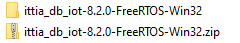
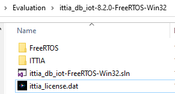

2.1. FreeRTOS+Windows¶
FreeRTOS is a real-time operating system for microcontrollers and selected microprocessors, while ITTIA DB is compatible with FreeRTOS.
To get started developing on FreeRTOS, ITTIA will send you a package specifically for your environment. Extract this package into the development tools of your target board. This package will contain ITTIA DB IoT and the respective header files. This API can be utilized from an example project of your target board’s hardware vendor.
To install and run ITTIA DB IoT on FreeRTOS:
- Copy your evaluation package to your target directory.
- Extract the package to the root of your target directory.

{kind=link}
Figure 2.1: Extract ITTIA DB IoT.
- Copy your license certificate into the home directory of your package.

{kind=link}
Figure 2.2: ITTIA DB IoT License Placement.
- Navigate to the root directory of your target and open
ittia_db_iot-FreeRTOS-Win32.slnwith MS Visual Studio 2019.
Note
If you receive a Security Warning, click OK. If you encounter any other error loading package contents, close Visual Studio and try again